Galerija i priče o ratnicima
Na ovoj stranici predstavljeni su neki od najpoznatijih ratnika kroz istoriju. Svaki od njih ostavio je dubok trag u svom vremenu kroz hrabrost, vojnu veštinu, strategiju i legendu koja se prenosi vekovima.

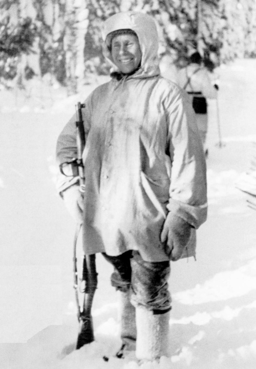
Simo Häyhä
Simo Häyhä bio je finski snajperista poznat pod nadimkom „Bela smrt”. Tokom Zimskog rata između Finske i Sovjetskog Saveza stekao je reputaciju jednog od najopasnijih snajperista u istoriji.
Njegova preciznost, strpljenje i izdržljivost u ekstremnim zimskim uslovima učinili su ga legendom modernog ratovanja. Koristio je prirodno zaklanjanje, sneg i teren kako bi ostao neprimetan protivniku.
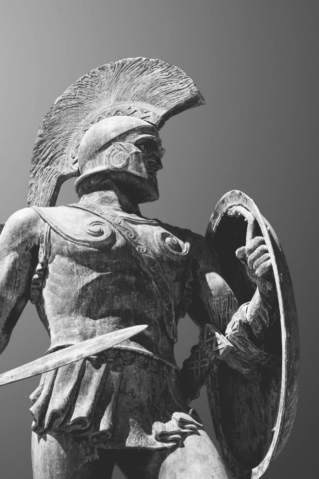
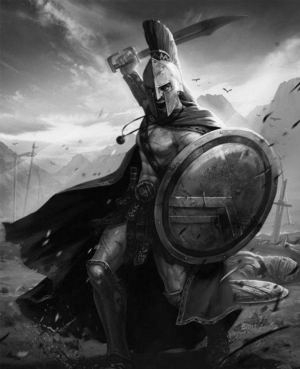
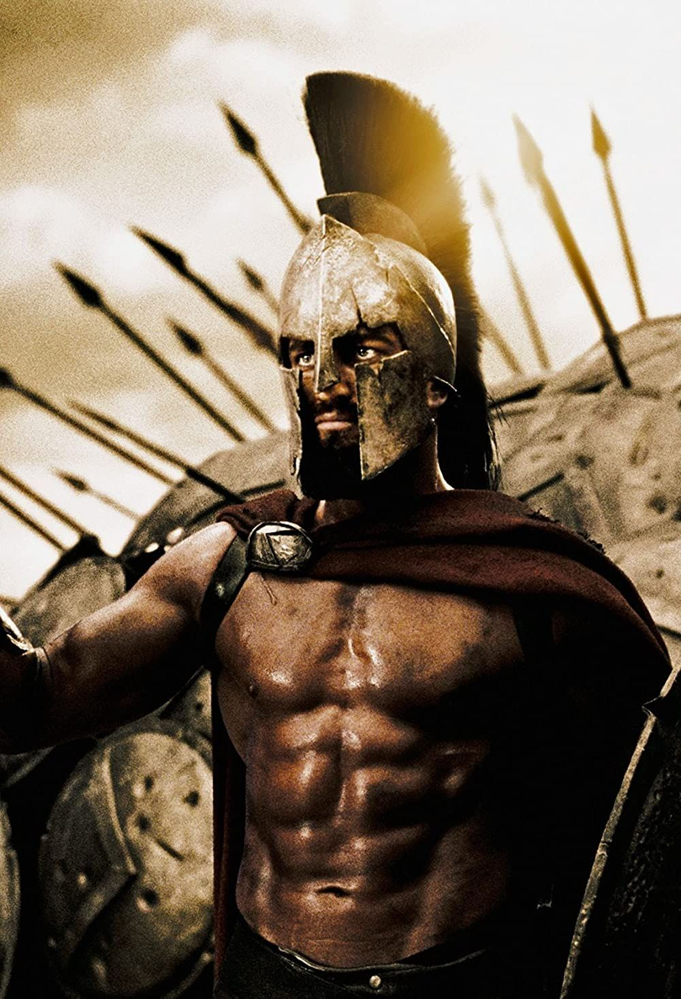
Leonidas
Leonidas I bio je kralj Sparte i jedan od najpoznatijih vojskovođa antičkog sveta. Upamćen je po tome što je predvodio malu grčku vojsku protiv daleko brojnije persijske armije u bici kod Termopila.
Njegova odluka da ostane i bori se do kraja postala je simbol hrabrosti, discipline i žrtve za slobodu. Leonidas je kroz vekove ostao primer ratničkog duha.
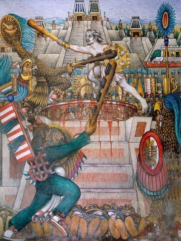
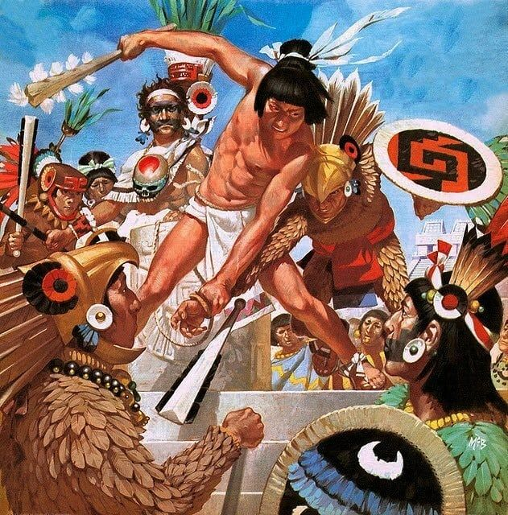
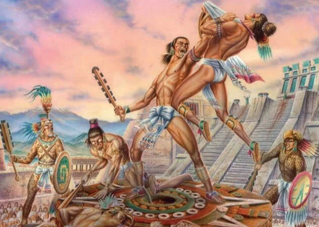
Tlahuicole
Tlahuicole je bio legendarni ratnik iz srednje Amerike, poznat po svojoj snazi, hrabrosti i borilačkom umeću. U narodnim pričama i istorijskim zapisima ostao je upamćen kao simbol časti i odlučnosti.
Njegovo ime se povezuje sa izuzetnim podvizima u borbi i otporom protiv neprijatelja, zbog čega je postao važan deo istorijske i kulturne tradicije regiona.
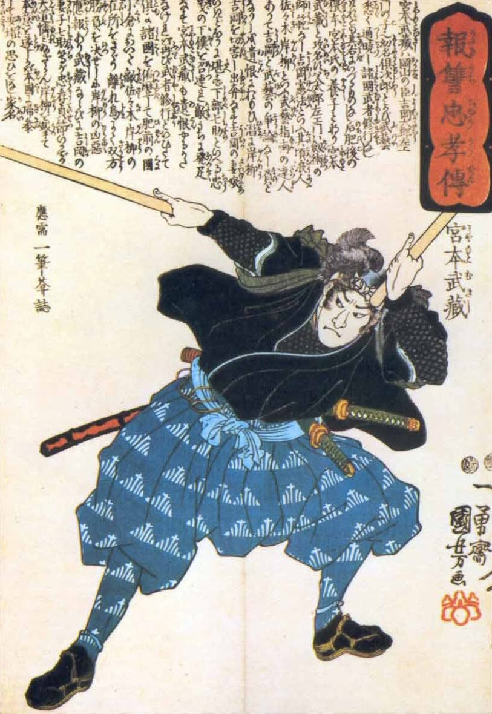
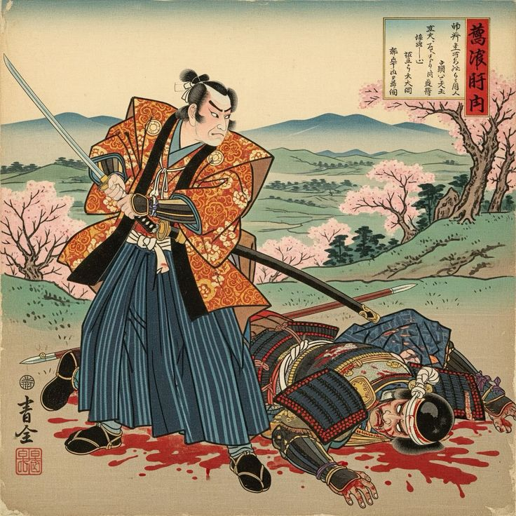
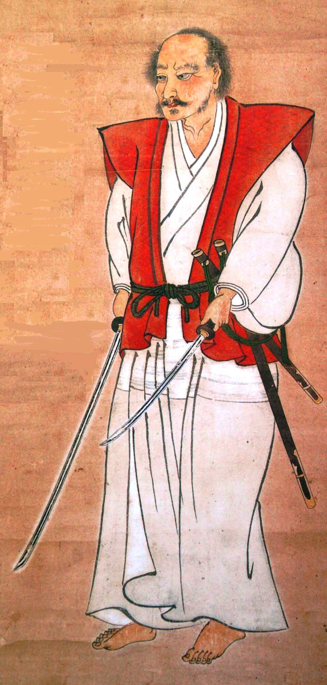
Miyamoto Musashi
Miyamoto Musashi bio je japanski samuraj, mačevalac, strateg i pisac. Poznat je po nepobedivosti u duelima i po delu „Knjiga pet prstenova”, koje se i danas proučava kao važan tekst o strategiji i disciplini.
Njegov stil borbe i razmišljanja nadilazio je samu veštinu mačevanja, pa je Musashi ostao poznat i kao filozof ratničkog života.
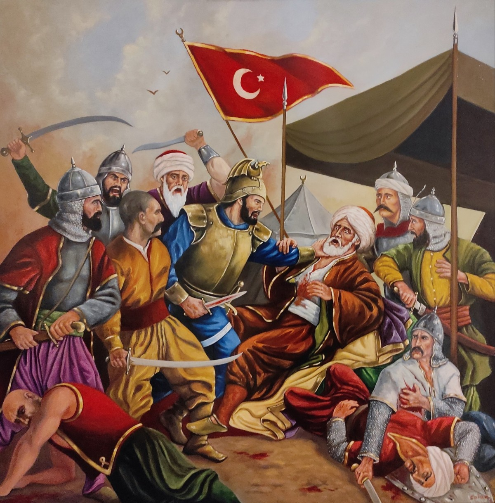
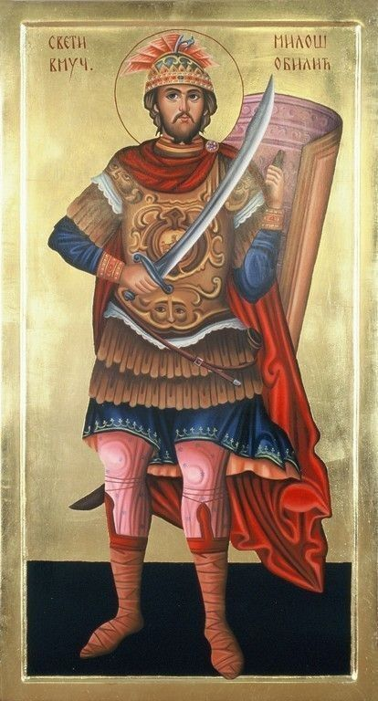
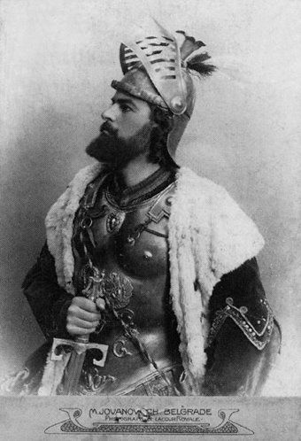
Miloš Obilić
Miloš Obilić zauzima posebno mesto u srpskoj istoriji i epskoj tradiciji. Najpoznatiji je po predanju da je uoči ili tokom Kosovske bitke 1389. godine uspeo da se probije do osmanskog sultana Murata i usmrti ga.
Bez obzira na različita tumačenja istorijskih izvora, Miloš Obilić ostao je simbol hrabrosti, lojalnosti i spremnosti na žrtvu za otadžbinu.

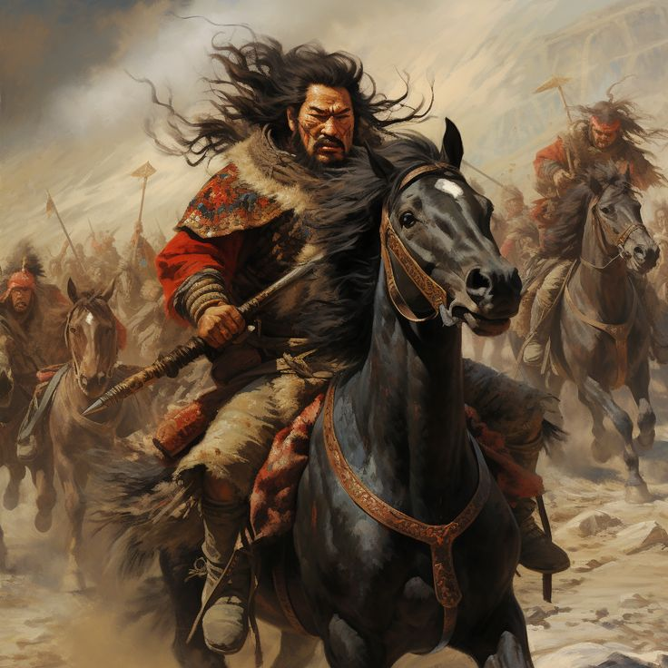
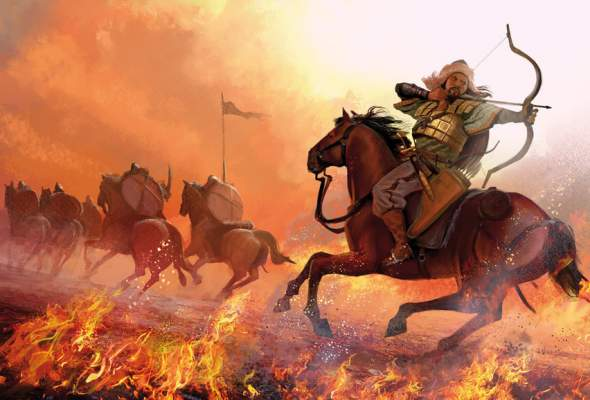
Atila
Atila, poznat i kao „Bič Božiji”, bio je vođa Huna i jedan od najstrašnijih i najuticajnijih vojskovođa svog vremena. Njegovi pohodi uzdrmali su Istočno i Zapadno rimsko carstvo.
Iako je ostao upamćen po svojoj surovosti i moći, Atila je bio i vešt politički vođa koji je uspeo da ujedini različita plemena i stvori snažnu vojnu silu.
Video sadržaj o ratnicima
U nastavku možete pogledati video materijale o najpoznatijim ratnicima kroz istoriju, koji dodatno prikazuju njihove podvige, borbe i značaj u istoriji.